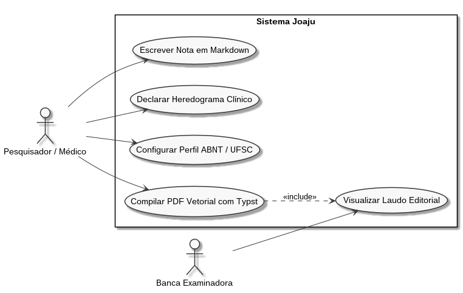
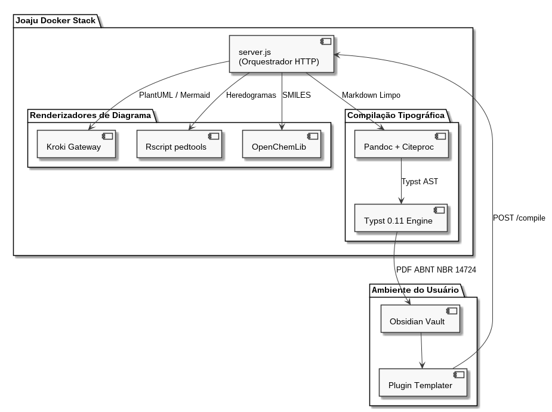

ENGENHARIA DE SOFTWARE & UML
Motor plantuml — Modelagem de Software & UML
O motor plantuml fornece suporte à consagrada suíte UML clássica (casos de uso, componentes, sequência, pacotes, atividades e classes) através do gateway Kroki integrado ao Joaju. Os diagramas são gerados em formato vetorial SVG.
⚙️ Diretivas de Configuração (%%)
| Diretiva | Sinônimos | Tipo | Padrão | Descrição |
|---|---|---|---|---|
layout.width |
width |
String | 75% |
Largura do diagrama na mancha do papel (ex.: 80%, 14cm). |
layout.max_width |
max-width |
String | 500pt |
Largura máxima permitida em pontos tipográficos. |
src |
file |
String | - | Importa código PlantUML a partir de arquivo .puml anexo. |
🧪 Exemplos Práticos
1. Diagrama de Casos de Uso (UML Use Case)
Markdown (plantuml usecase)
Resultado da Renderização

```plantuml
%% width=80% max-width=520pt
@startuml
left to right direction
skinparam packageStyle rectangle
actor "Médico Geneticista" as Medico
actor "Bioinformata" as Bioinfo
actor "Paciente" as Paciente
rectangle "Sistema Joaju" {
usecase "Cadastrar Levantamento Familiar" as UC1
usecase "Compilar Heredograma Clínico" as UC2
usecase "Executar Pipeline NGS" as UC3
usecase "Emitir Laudo ABNT/Vancouver" as UC4
usecase "Acessar Resultado Online" as UC5
}
Medico --> UC1
Medico --> UC2
Medico --> UC4
Bioinfo --> UC3
Paciente --> UC5
UC2 ..> UC1 : <>
UC4 ..> UC2 : <>
@enduml
``` 2. Diagrama de Componentes de Software
Markdown (plantuml components)
Resultado da Renderização

```plantuml
%% width=85% max-width=560pt
@startuml
skinparam componentStyle uml2
package "Obsidian Workspace" {
[Markdown Notes] as MD
[Templater Plugin] as TP
}
package "Joaju Stack (Docker)" {
[Express Server :3000] as API
[Pandoc Filter Engine] as FILTER
[Rscript Pedtools] as R
[Typst Compiler 0.11] as TYP
}
cloud "Kroki Gateway" {
[Mermaid / D2 / PlantUML] as KROKI
}
MD -> TP : Atalho
TP --> API : POST /compile
API --> FILTER : Markdown AST
FILTER --> R : Blocos pedtools
FILTER --> KROKI : Blocos PlantUML
FILTER --> TYP : Typst Intermediate
TYP --> API : Binário PDF
API --> TP : Resposta 200 OK
@enduml
```